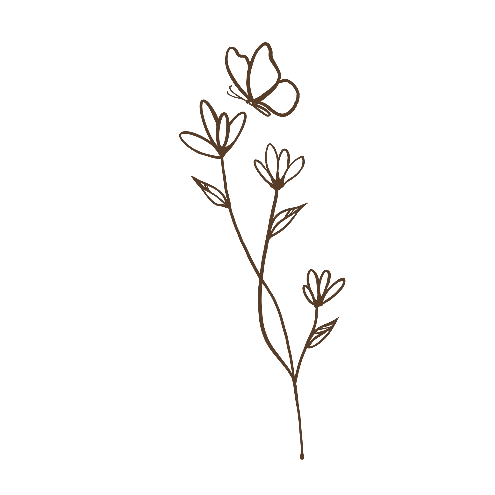

Compreender
Antes de buscar soluções, é importante entender o que mantém o sofrimento acontecendo.
Psicóloga Clínica • Terapia Cognitivo-Comportamental
Você pode começar exatamente de onde está.
A terapia é um espaço para compreender, com calma, aquilo que parece difícil de carregar sozinha.
Agendar minha primeira sessãoAté que, em algum momento, entender por que tudo tem parecido tão pesado se tornou mais difícil do que continuar carregando.
Às vezes, esse peso aparece de formas diferentes...
Mas compreender esses padrões pode ser o início de uma mudança construída com mais clareza e menos culpa.
Na Terapia Cognitivo-Comportamental, buscamos compreender como pensamentos, emoções e comportamentos se influenciam mutuamente.
Quando esses padrões começam a fazer sentido, pequenas mudanças deixam de parecer impossíveis e passam a ser construídas de forma mais consciente, respeitando a sua história e o seu tempo.
E nem tudo precisa continuar sendo carregado sozinho.
Vamos conversar sobre isso?Pensamentos, emoções e comportamentos estão constantemente influenciando uns aos outros.
Muitas vezes, reagimos de formas que parecem automáticas, repetimos padrões sem perceber ou acreditamos que determinados pensamentos são verdades absolutas.
Compreender como tudo isso se conecta é um dos primeiros passos para construir mudanças mais conscientes e possíveis.
Quando aquilo que parece confuso começa a fazer sentido, mudar deixa de parecer impossível.
Antes de falar sobre a minha formação, quero falar sobre aquilo em que acredito. A forma como conduzo a terapia nasce da maneira como creio o que as pessoas devem ser acolhidas: com escuta, respeito e ciência.
Não acredito que mudanças consistentes surjam apenas porque alguém recebeu um conselho ou encontrou uma resposta pronta. Acredito que elas começam quando existe espaço para compreender, nomear e olhar com sinceridade para aquilo que antes parecia apenas um peso difícil de explicar.
Por isso, valorizo a história de cada pessoa, o contexto em que ela vive e o tempo necessário para que cada assunto possa ser elaborado com segurança. Mais do que buscar respostas rápidas, meu objetivo é construir, junto com cada paciente, um processo que respeite sua autonomia, sua individualidade e aquilo que faz sentido para a sua vida.
Foi essa forma de compreender a Psicologia que me aproximou da Terapia Cognitivo-Comportamental, uma abordagem baseada em evidências científicas que une acolhimento, reflexão e estratégias práticas para promover mudanças possíveis.
Sou Psicóloga Clínica, CRP 08/41556, desde 2024 e também pós-graduada em Terapia Cognitivo-Comportamental e Neuropsicologia.
Mais do que apresentar minha formação, espero que este espaço tenha permitido que você conhecesse um pouco da forma como trabalho e do cuidado que procuro oferecer em cada atendimento.
Se você sentir que esse jeito de conduzir a terapia faz sentido para a sua história, será um prazer caminhar ao seu lado.
Agendar minha sessãoAntes de buscar soluções, é importante entender o que mantém o sofrimento acontecendo.
Nem todo pensamento corresponde à realidade. Na terapia, aprendemos a olhar para eles com mais curiosidade e menos julgamento.
Mudanças consistentes acontecem aos poucos, respeitando sua história, seus objetivos e o seu tempo.
Cada processo é único. Ainda assim, algumas pessoas chegam ao consultório por motivos que acabam se parecendo mais do que imaginam.
... ou simplesmente sente que chegou a hora de olhar para si com mais cuidado.

{{ item.resposta }}
Dar o primeiro passo nem sempre é simples. E tudo bem. Se este espaço fez sentido para você, talvez seja porque alguma parte da sua história encontrou lugar nestas palavras.
Quando você sentir que é o momento, será um prazer construir esse processo ao seu lado, com respeito ao seu tempo, à sua história e àquilo que faz sentido para a sua vida.
Agendar minha primeira sessão